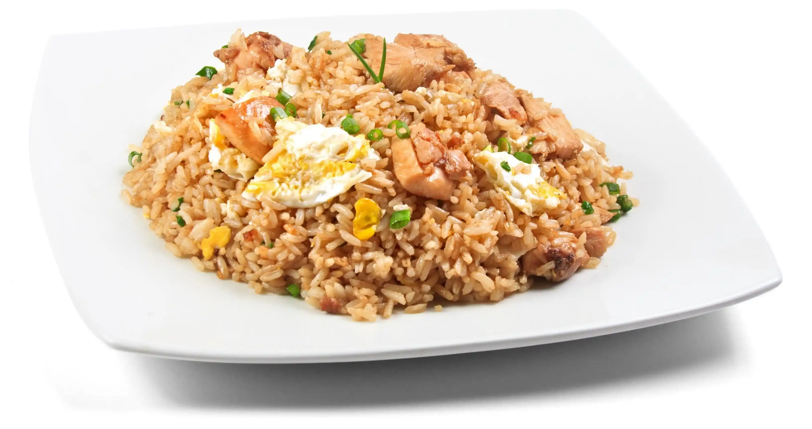
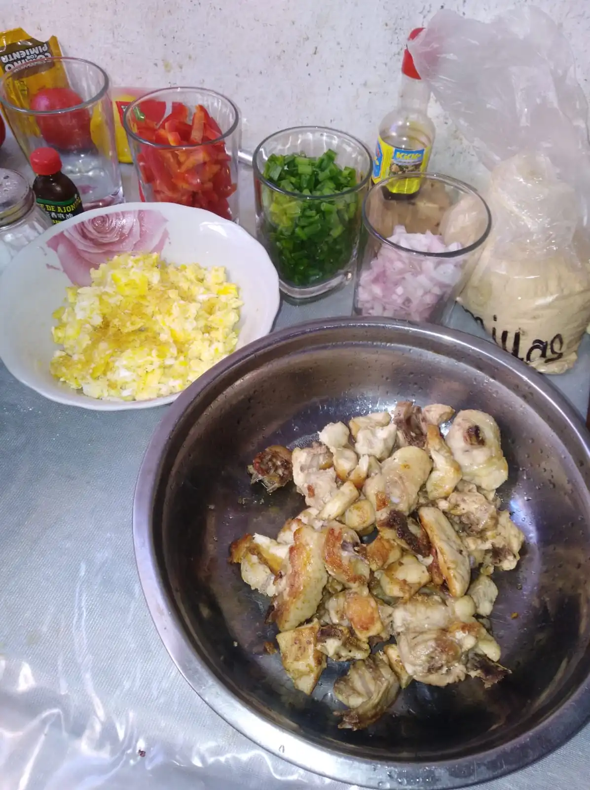

Arroz Chaufa
Peruvian-chinese dish. Easy to cook just add and mix everything.

- ⏲️ Prep time: 40 min
- 🍳 Cook time: 10 min
- 🍽️ Servings: 4
Ingredients
- Rice
- Salt
- Bell Pepper
- Chicken
- Eggs
- Soy Sauce
- Welsh Onion

Directions
- Cut the chicken into pieces and fry it. Don’t forget the salt.
- Cook scrambled eggs. Don’t forget the salt.
- Cook the rice. If it is yesterday’s rice better, preferably without salt.
- Cut the welsh onion and bell pepper into small squares.
- Mix everything over low heat, adding soy sauce.
- Optional: Add bacon, sesame oil.
- If everything is salty, you can reduce it with just a teaspoon of sugar, especially if you cook the rice with salt.